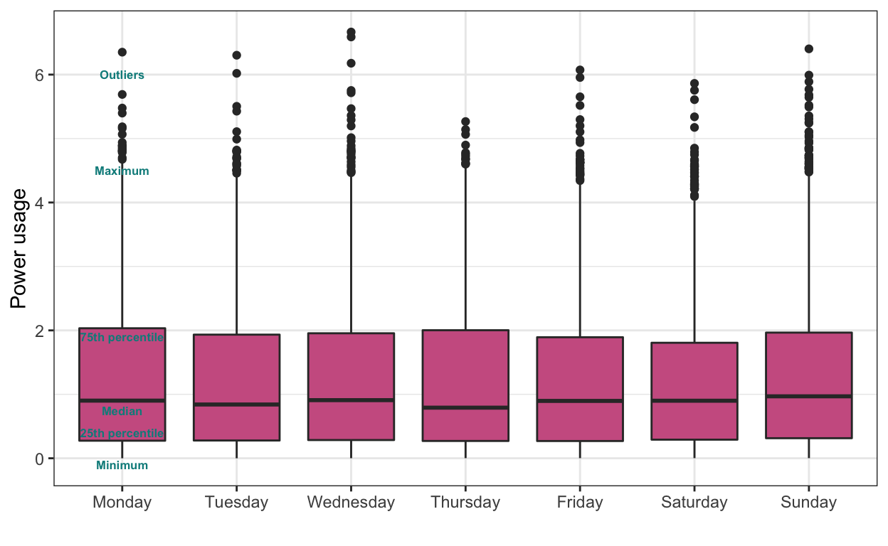
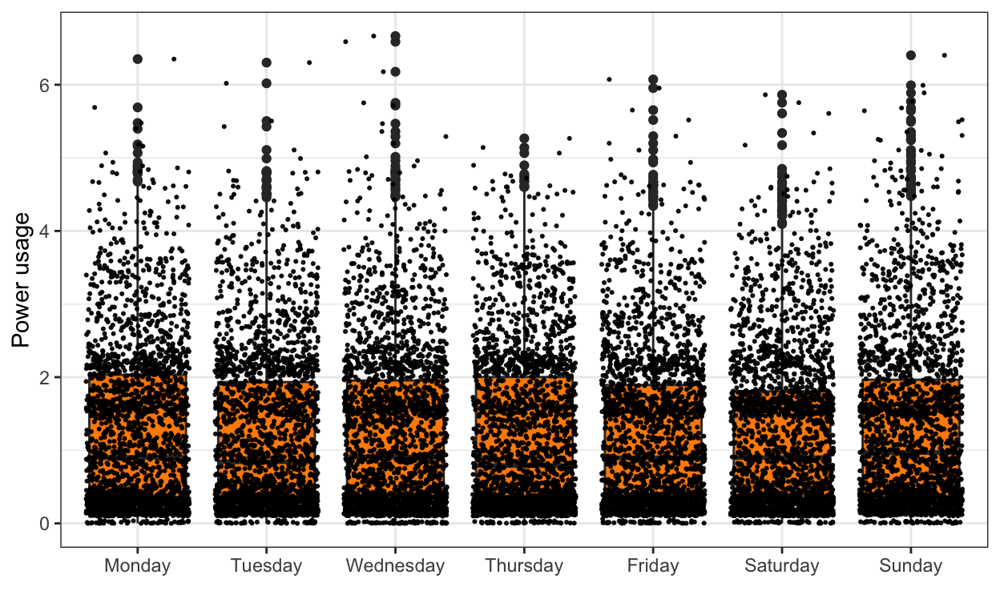
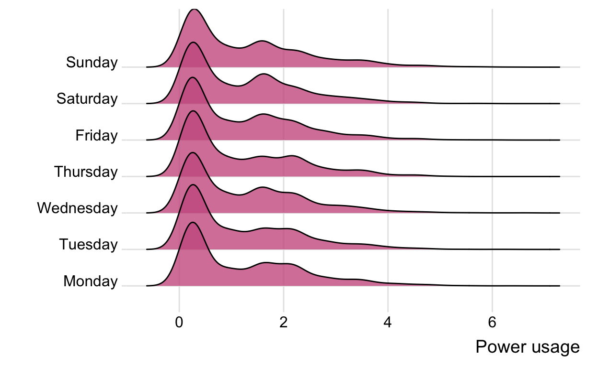
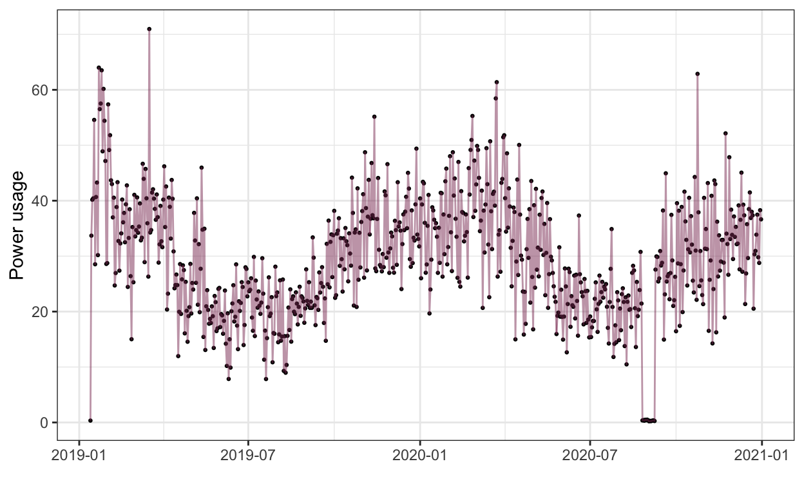
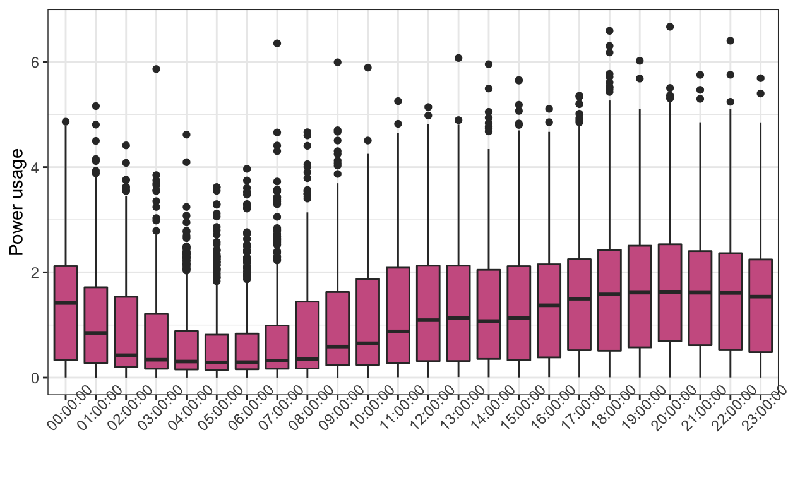
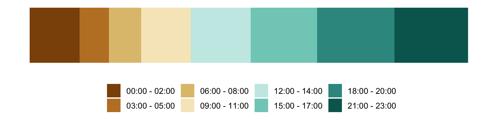

(This post was first made in January 2021, I’m just reposting now that I have this blog thing going)
Welcome to my power usage project! Through elhub I have downloaded (and will continue to download) monthly data sets containing the hourly power usage in my apartment. I made an R-package that contains all the data plus some useful functions. Here I will explore some visualisations of the data.
My goal is to produce visualizations of these data that are easy to interpret for people without any particular statistical background. I this document I will be trying out different things and showing a bit of the process, so this is not meant to be a perfect finished product, rather a kind of documentation of the process.
First, let us load the data and look at the structure of it.
Show code
data <- clean_and_prepare(power_data)
head(data)
tid forbruk date month weekday year
...1 2019-01-14 00:00:00 0.338 2019-01-13 1 Monday 2019
...2 2019-01-14 01:00:00 1.047 2019-01-14 1 Monday 2019
...3 2019-01-14 02:00:00 0.327 2019-01-14 1 Monday 2019
...4 2019-01-14 03:00:00 1.475 2019-01-14 1 Monday 2019
...5 2019-01-14 04:00:00 2.791 2019-01-14 1 Monday 2019
...6 2019-01-14 05:00:00 3.286 2019-01-14 1 Monday 2019
hour
...1 00:00:00
...2 01:00:00
...3 02:00:00
...4 03:00:00
...5 04:00:00
...6 05:00:00So our data cosists of the hourly power consumption, as well as columns giving the year, date, month, weekday and hour for each observation. Now I want to explore some visualizations.
Basic plot
Let’s first try a simple plot of all the observations.
Show code

This is a mess. While we do see some general tendencies that are interesting (like maximum consumption varying seasonally), it is difficult to tell what is going on in all the noise. It is also worth noting the really low values during August of 2020. This was due to some error with our power measuring device, and we had to have a guy from the company come fix it. I won’t be handling this in any special way, for now I will just treat them along with the rest of the data. It is worth noting that the values have not been set to zero or NA, instead they are just unrealistically low. If these kinds of problems with the measuring device was a common problem, this would be really frustrating, as there is no way of knowing then if the measurement is actually that low or if there is an error (although appearently we didn’t get charged less for this period, since they knew something was wrong they instead extrapolated from the previous correct values).
Average per weekday - Pitfalls of the boxplot
Another option is to try to group the data by some time period by summing or averaging it. For instance, we can look at the power usage for each weekday. For this, we might be interested in looking at the average power consuption per day, which could easily be calculated. However, just calculating the average, without showing any information about the spread or variation in the observations, is not very good. And when we also have the option to display things graphically instead of just giving summary statistics, a boxplot is a common choice. In this case, a boxplot would look like this:
Show code
ggplot(data, aes(x = weekday, y = forbruk)) +
geom_boxplot(fill = "hotpink3") +
ylab("Power usage") +
xlab("") +
annotate("text", x = 1, y = c(-0.1, 0.4, 0.75, 1.9, 4.5, 6), label = c("Minimum", "25th percentile", "Median", "75th percentile", "Maximum", "Outliers"), size = 2.2, fontface = "bold", color= "darkcyan")

The boxplot displays a lot of information. The first thing I look at is the bold line in the middle of the orange box, which indicates the median (the 50th percentile) of the values in this group. The edges of the box indicate the 25th and 75th percentiles (25th percentile means the value that 25% of the observations lie below, and 75% lie above, and similarly for the 75th percentile). The ends of the “whiskers” show the minimum and maximum value of the data, excluding the outliers, and then the outliers are plotted explicitly.
The box plot (or plots with range-bars) was introduced by the data visualization specialist Mary Eleanor Spear, first in her book Charting statistics in 1952.
From the above plot, it really doesn’t look to me like there are any real differences in power usage between each weekday. I would be ok with leaving it like this, but boxplots are a bit controversial, since they may easily show the same box plot for observations of very different distributions. See this nice article for a further discussion of this. There are some ways to fix this, however. A simple fix to make sure we aren’t hiding any important information about the distribution of the data is to plot a jittered scatterplot on top. That would look like this for us:
Show code
ggplot(data, aes(x = weekday, y = forbruk)) +
geom_boxplot(fill = "darkorange") +
ylab("Power usage") +
xlab("") +
geom_jitter(color="black", size=0.4, alpha=0.9)

This is quite transparent, but in our case it looks chaotic since we have so many observations. It also does’t solve the problem that the boxplot is not immediately obvious if you have never seen one before, which I would say is a major disadvantage when visualizing data for most audiences.
An alternative to the box-plot is the violin plot. Personally, I’m not a fan of the violin plot because I initially found the fact that it is symmetric around a center line to be a bit confusing. If I want the plot to be really easy to interpret, I find the ridge plot to be superior to both the boxplot and violin plot. Here is how it looks using the same data as above:
Show code
ggplot(data, aes(x = forbruk, y = weekday)) +
geom_density_ridges(alpha = 0.8, fill = "hotpink3") +
theme_ridges() +
ylab("") +
xlab("Power usage")

—-some interpretation of this—-
As a last point I just want to compare the boxplot, violin plot and ridge plot here for the reader, because I think preferences vary and it is interesting seeing the different options (note that I’ve flipped the axes on the two first so they are the same direction as the ridge plot).
Show code
p_box <- ggplot(data, aes(y = weekday, x = forbruk)) +
geom_boxplot(fill = "darkorange2") +
xlab("") +
ylab("")
p_violin <-ggplot(data, aes(y = weekday, x = forbruk)) +
geom_violin(fill = "hotpink3") +
xlab("") +
ylab("") +
theme(axis.text.y = element_blank())
p_ridges <- ggplot(data, aes(x = forbruk, y = weekday)) +
geom_density_ridges(alpha = 0.8, fill = "darkgreen") +
ylab("") +
xlab("") +
theme(axis.text.y = element_blank())
(p_box + p_violin + xlab("Power usage") + p_ridges)

Okay, it pretty much looks like the distribution is the same for each week day, maybe not surprisingly, although I might have expected the consumption to be a bit higher during the week-end. Really kind of boring.
Did the pandemic affect power usage for each weekday?
However, during most of 2020 we worked from home. Could it be that this is affecting the results, and that weekday differences were larger in 2019? Let’s investigate.
Show code
ggplot(data, aes(x = weekday, y = forbruk, fill = year)) +
geom_boxplot() +
ylab("Power usage") +
xlab("") +
scale_fill_brewer(palette = "Dark2")

There are some differences here, but I really don’t think we can say for certain that there is a meaningful difference between the power consumption in 2019 and 2020 for any of the weekdays. This makes sense, because although we were probably more outside of the appartment in 2019, usually there would be at least one of us at home regardless, so the situation is not very different.
Total per month
Inspired by the weekday plots, I want to examine if the total monthly power consumption has changed between 2019 and 2020. Instead of looking at the median, average or some other measure per month, I will simply look at the total power consumption per month in 2019, and separately in 2020, since a month is a continuous stretch of time. Had I been looking at monthly consumption not separated by year, however, I would have calculated the average total monthly consumption across those years. Maybe that will be interesting once I have data from more than just two years.
Anyway – here is the total power usage per month for 2019 and 2020. This is also the plot that our power provider shows me on their webpage, and I feel like it is particularly useful for just seeing how much we use. Of course – some months are longer than others, so it is not completely fair to compare between the months, but it certainly gives a rough impression.
Show code

Here we can sort of see the seasonal trend, and it seems very reasonable to me. I find it interesting that March is the month with the highest power consumption, I would not have guessed that in advance.
Daily usage
There is another resolution between our first plot and the monthly total plot in the previous section: it might also be interesting to look at the total daily consumption. I expect this will be slightly smoother than the first plot, and it may be interesting to see the time-series day-by-day instead of grouped by month like above.
Show code

Here we see more of the variation between different days in the same month. I would really have liked to know what happened on those peak days.
Usage throughout the day
As a final plot, I would like to know how the power usage is distributed throughout the day. First just a simple box plot:
Show code
ggplot(data, aes(x = hour, y = forbruk)) +
geom_boxplot(fill = "hotpink3") +
ylab("Power usage") +
xlab("") +
theme(axis.text.x = element_text(angle = 45))

I also want to try a fancier, less detailed version that represents time periods with higher usage as larger areas. I have split the day into 3-hour intervals (should I use a finer resolution?), and the below plot shows the total power consumption in each time period. (Would it be better with a donut to represent the day as a cycle?) (would be nice to show the times on the plot somehow)
Show code
# Adding grouped time column
data <- data %>% mutate(grouped_time =
factor(floor(as.numeric(substr(hour, start = 1, stop = 2))/3)))
ggplot(data, aes(x = 1, y = -forbruk, fill = grouped_time)) +
geom_col() +
scale_fill_brewer(labels = c("00:00 - 02:00", "03:00 - 05:00",
"06:00 - 08:00", "09:00 - 11:00",
"12:00 - 14:00", "15:00 - 17:00",
"18:00 - 20:00", "21:00 - 23:00"),
palette = "BrBG") +
theme_transparent() +
coord_flip() +
theme(legend.position = "bottom",
legend.title = element_blank())
